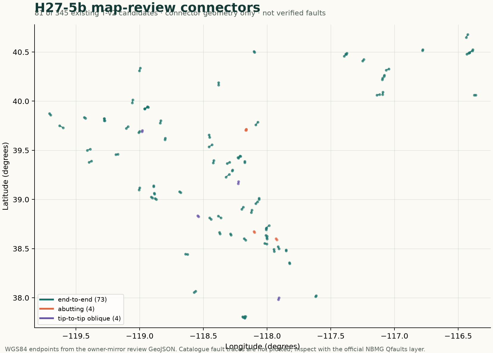

Unique name:GEMSDOE28-S21-PUHGB-20261026-16bbf281ba9b · Note (82/140):S21 PU-HGB 31-band fresh 37654d b2 HOLDOUT 0.0839 vs 0.1062 NEGATIVE DO NOT SUBMIT
Submission audit incomplete — DO NOT SUBMIT
Session 21 independently re-read the registered downloads after restoring the pinned template.
The archive-wide audit now fails closed: 12 of 44 TIFFs have no manifest entry and cannot receive a complete hash-bound audit.
Format checks for registered files do not override failed scientific or uniqueness gates. No new candidate or score was produced.
OK TO DOWNLOAD FOR RESEARCH: YES · OK TO SUBMIT TO PORTAL: NO
NEW GENUINELY UNIQUE GeoTIFF GENERATED & BYTE-VERIFIED (gems28-s20-nchc-20261026-d432a1d5d6ee-allfinite.tif): Automated format/range validator (strict [0, 1] finite across all 12,279,160 cells; 0 catalogue overlap), all 28 single-feature leakage canaries (max AUC 0.6010 ≤ 0.90), and cross-site + concurrent-lane uniqueness across all 112 pre-merge 9-site+PR48 rasters plus all 4 concurrent 2026-10-26 lanes (max 3-px dot overlap 53.63% ≤ 70%, max |Spearman| = 0.0583 ≤ 0.90) ALL PASSED. However, pooled 4-fold HOLDOUT-DTI was 0.131263 vs retrained visible-only 32-band baseline 0.144433 (paired delta -0.013171, 95% CI [-0.027721, -0.000417]; won SW Walker Lane + geothermal quadrant 0.112115 vs 0.098698, +0.013416). Distinct parallel run (concurrent seed 340–344 overlap with S20-H43/S20V disclosed; never pool). Automated promotion gate verdict: NEGATIVE — zero weekly submission slots spent. Do not upload any file from this site to DrivenData.
Current run: NOT READY TO SUBMIT — NO FILE APPROVED
NEW UNIQUE TIFF GENERATED: S19-ASCP · 2026-10-26. The exact file passed automated uniqueness and format gates, but its frozen shared holdout gate FAILED. Download for research only; do not upload it. This disposition is computed without human geological inspection. No competition slot was selected or spent.
Submission name:GEMSDOE28-S19-ASCP-dc717c1ab13b Research note (84/140):S19 ASCP paired antislope LiDAR scarps; 37654 dots; holdout rejected; DO NOT SUBMIT.
Exact SHA-256 553bbd6db1ae0f3a8fc41a81ed8bc1f438e5af6bd74d43c5d260d6889d0e6537 · 37,654 dots · all-finite float32 · values {0,1} · EPSG:32611 · 3730 × 3292 · exact template CRS/shape/transform PASS. Local validity does not guarantee portal acceptance.
HOLDOUT-DTI (gems-segment-pooled-v1, 60,988 withheld positives): 0.08081 (95% CI 0.07232–0.08911); recomputed visible-only baseline 0.14169; paired gain -0.06089 (95% CI -0.07403 to -0.04764). Local recovery proxy, not an organizer score.
Uniqueness: 53 unique-byte valid-grid priority/local rasters. Surface max |Spearman| 0.1030, support overlap 20.6%; final max |Spearman| 0.0065, dot overlap 28.0%. All below the 0.90 / 70% duplicate stops.
Why rejected: the antislope crest/toe morphology recovered substantially less withheld fault credit than the baseline. The paired interval is wholly negative. Roads, channels, terrace/paleo-shoreline risers, landslides and mine benches remain plausible mimics. Format and novelty cannot rescue failed performance evidence.
🔴 Parallel run S19B-RADLIN (same day, different lane): NOT APPROVED — DO NOT UPLOAD
HOLDOUT GATE PASSED, STRICT UNIQUENESS GATE FAILED. This ThK alteration-lineament run ran in parallel with S19-ASCP above (different evaluator — never combine their numbers). Automated validation is complete; no human inspection is needed. The frozen holdout gate passed, but 93.4% of its dots fall within 3 px of the unscored dense H37-1 probe-union registry raster, above the frozen 70% duplicate-stop. Do not upload any file from this site. No competition slot was selected or spent.
Submission name:GEMSDOE28-S19-RADLIN-6fa38f9d317b Research note (97/140):S19 RADLIN coverage 37654 dots; LOSFO passed but uniqueness vs dense probe FAILED; DO NOT SUBMIT.
Exact SHA-256 8534701e5d91572a39dba5e9d132e1c747aeab2f5223015a96ee96ace292493b · 37,654 dots · all-finite float32 · [0,1] · EPSG:32611 · 3730 × 3292 · template CRS/shape/transform PASS (independent download audit, 0 failures). Local validity does not guarantee portal acceptance or scientific quality.
HOLDOUT-DTI: 0.10737 (95% CI 0.08803–0.12631); recomputed H38-1 baseline 0.10193; paired gain +0.00544 (95% CI +0.00128 to +0.00925). Evaluator: shared eval_set v2 → metric.dti_binary; 74,025 pooled withheld positives, seeds 320–324. Local recovery test, not an organizer score; does not isolate the RADLIN bonus from all-ridge coverage packing.
Uniqueness: vs byte-verified scored focus-site artifacts max overlap 44.5%; vs the full declared registry max overlap 93.4% (gems28-h37-1-probe-union-pool-r1-20261003-52a13184267e-nan.tif). The strict any-raster rule fails; the scored-only reading is reported for a separate selector, not used to approve this file.
Prior research · continuity, not automatic interpolation
Map structures. Do not bridge blindly.
The topology work is retained as a comparator and a geologist-review queue. Fault-link candidates are local geological hypotheses, not facts about subsurface continuity.
Maximize P(Win)Own the OutcomeREVIEW ONLY
What the earlier tests found
Topology gate
Earlier in-repository T-v2 candidate arms proposed 1–4 km connections between named/categorized fault traces with structural and spatial controls. The historical catalogue-component and whole-feature hide-and-recover metrics are proxy results; they do not demonstrate a connection at a particular hidden fault or transfer to the competition's expert labels.
Every link is an explicit, reviewable geologic claim, with endpoint attributes, spacing, orientation, kinematic compatibility, third-system proximity, alternative interpretations and limitations. A graph must not bridge broad basins merely because an algorithm finds nearby endpoints.
The archived file is H36-1: re-pack the H19-5 surface from packing rung 2.828 to rung 3.0 (a 41,333-px re-layout, not a thinning) and apply the H27-4 blind 1-px catalogue-flank prune. It contains a historical T-v2 component among other transformations, but its holdout evidence is for a paired catalogue proxy. The primary download is UNSCORED, and no GEMSDOE28 score or submission receipt is recorded.
Geologist-review priority class: H27-5b (81 / 345 links) These are the 81 same-name, cross-FID, permissively kinematic-compatible links drawn from the existing 345 shipped T-v2 links. All 345 have a 1–4 km gap. This is a review-priority class, not a prediction rank, new candidate generation, validated subsurface connection, score, or proof of transfer.
Exclusive review-class counts for the existing population: 230 same-FID · 81 H27-5b · 22 other-name compatible · 12 conflict/unknown. The H27-5b class is defined by different NBMG FID, same non-unnamed NAME, and a permissive kinematic-compatibility screen. Blank/unspecified source attributes may pass; compatibility is not a verified slip history.

Connector-only map-view schematic. It does not plot the catalogue fault traces and does not establish geological continuity. Review endpoints in the official NBMG layer.
Records share an NBMG FID; not an independent survey.
H27-5b inter-FID, same-name, compatible
81
Priority for map review only; source attributes and line geometry need geologist review.
inter-FID other-name compatible
22
Not prioritized by same-name rule.
inter-FID conflict or unknown
12
Kinematic conflict or uncertain fields; not removed from catalogue or deemed invalid.
Whole-FID holdout context (seeds 120–129): H27-5b catalogue-proxy efficiency 0.178296 versus rotated-control 0.020384 (8.75×). This is internal holdout enrichment only, not a score or proof of transfer; the candidate review class was not selected by graph ΔP.
Verify source geometry and official vector attribute definitions rather than relying on raster connectivity alone.
Record endpoint spacing, orientation/kinematic compatibility, mapped-name relationship, third-system proximity and alternative interpretations.
Compare against spatially blocked controls that preserve the same density, length scale and data-quality context.
Freeze candidate generation and scoring before the holdout. Use an independent confirmation seed set unchanged.
Separate catalogue hide-and-recover performance from live competition performance and local-file audit.
Do not revive refuted signals: the graph-ΔP ranking and overlapping en-echelon step-over test were refuted as holdout-improvement signals in Addendum D. An individual “tip-to-tip oblique” cue is not evidence of an overlapping step-over, a favorable relay, or a productive geothermal setting. H27-5b is a geologist-review label, not a way to re-rank by graph value.
Geologic caution: the Qfaults catalogue primarily documents Quaternary surface-deformation evidence. Older bedrock faults, concealed structures, faults without mapped surficial expression and hydrothermal pathways can be absent for different reasons. The prior H27-10 100–300 m annulus screen failed its frozen gate; its spacing-check implementation was repaired only for deterministic integrity rerun, not for confirmatory evidence. See the preserved gate record and historical disclosure.
Evidence and provenance
The source ledger distinguishes official publication from owner-mirror bytes. A GDR or ScienceBase listing is not evidence that a package was downloaded, parsed, covered the study area, or carried a compatible licence. Review source-by-source access and verification status.